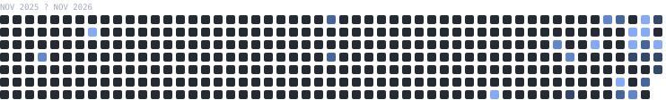

InternMatch
Worked with a small team on an internship-matching platform, collaborating on product features and the student-to-opportunity matching workflow.
Computer Science student · Bhubaneswar, India
I’m Ashutosh Biswal, focused on Machine Learning, AI engineering, backend development, and deploying practical data-driven applications.
01 / About
 Bhubaneswar, India
Bhubaneswar, India
I’m a Computer Science & Engineering student at Biju Patnaik University of Technology, interested in the space where machine learning meets useful software.
My project work spans tabular data preparation, feature engineering, classification, and the APIs that make a model usable. I care about the whole path: understanding the problem, validating the approach, and making the result accessible beyond a notebook.
I’m looking to learn alongside thoughtful engineering teams and contribute to practical AI and backend projects.
02 / Experience & collaboration
Worked with a small team on an internship-matching platform, collaborating on product features and the student-to-opportunity matching workflow.
03 / Selected work
A tabular classification project exploring how applicant data can support credit approval decisions, with a LightGBM pipeline and a live prediction demo.
Estimate approval outcomes from structured applicant information.
Feature engineering, class-imbalance handling, and hyperparameter tuning.
LightGBM classifier with a scikit-learn workflow.
README reports holdout metrics; training code and data are needed to reproduce them.
A student-to-internship matching concept that uses student profiles and opportunity requirements to surface relevant roles.
Help students navigate opportunities against their skills and profile.
Random Forest recommendation workflow, as described for the project.
Student skills and CGPA are part of the described matching profile.
Training data, evaluation, and repository link are not published here.
Planned agricultural assistant exploring crop-health analysis, agricultural intelligence, and mandi price prediction. This project is not presented as a completed or validated system.
03 / Toolkit
A practical toolkit built through coursework and project work. I’m continuing to deepen my skills in model evaluation and production-minded AI engineering.
Languages I work with
Modeling & evaluation
Hands-on frameworks
Working with data
Model-serving APIs
Project stack
Build, test, collaborate
Certification
↗ Proficiency varies by tool; the project section shows where I’ve applied these skills. Technologies without project evidence aren’t presented as expert-level.
04 / Open work
GitHub is the source of truth for my public code and contribution activity. Repository languages, recent updates, and documentation can be checked directly there—no mirrored or inflated stats.

LightGBM credit-approval app with a Flask prediction endpoint and a hosted interactive demo.
Traffic-monitoring system for detecting vehicles, tracking lane rules, and surfacing alerts in a dashboard.
Credit Approval and Netra include READMEs. Zenith-PM’s default branch did not expose a README when checked; add setup and architecture notes to make it easier to evaluate.
05 / The journey
Biju Patnaik University of Technology · expected 2028
Reliable model evaluation · practical AI applications · backend systems that make ML useful
06 / Say hello
Open to internships, collaboration, and conversations about applied machine learning and software engineering.
bashutosh017@gmail.com